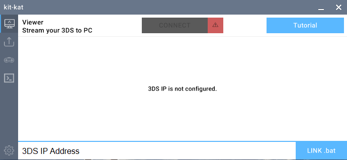
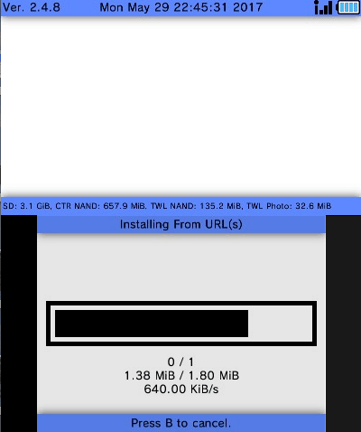
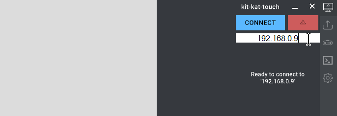
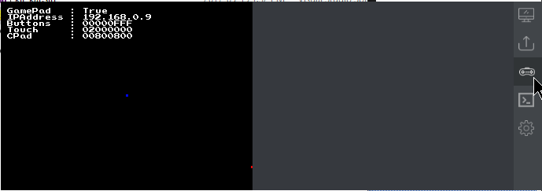
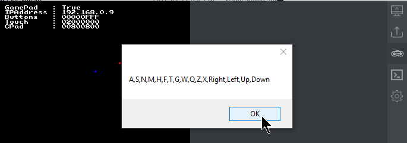
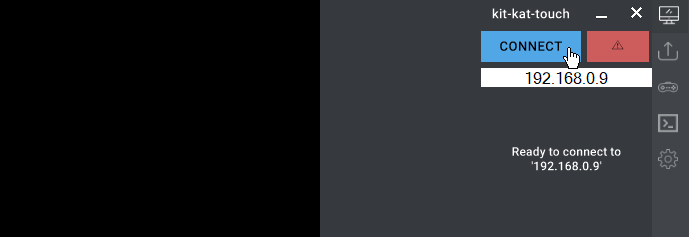
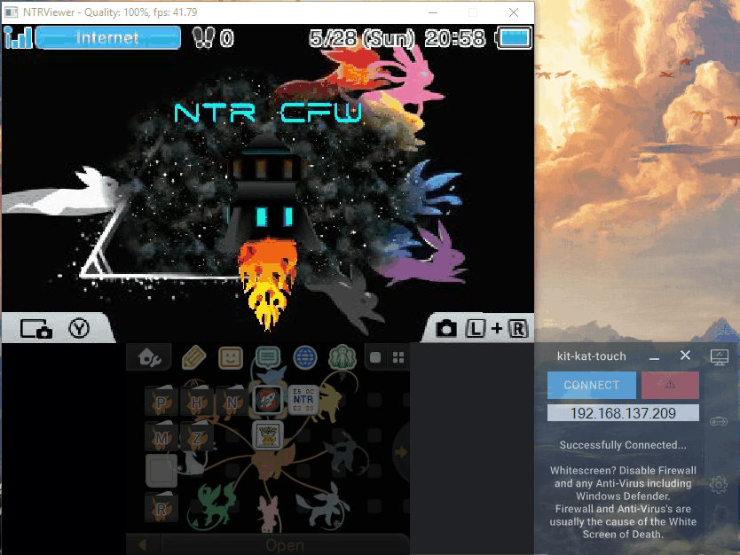
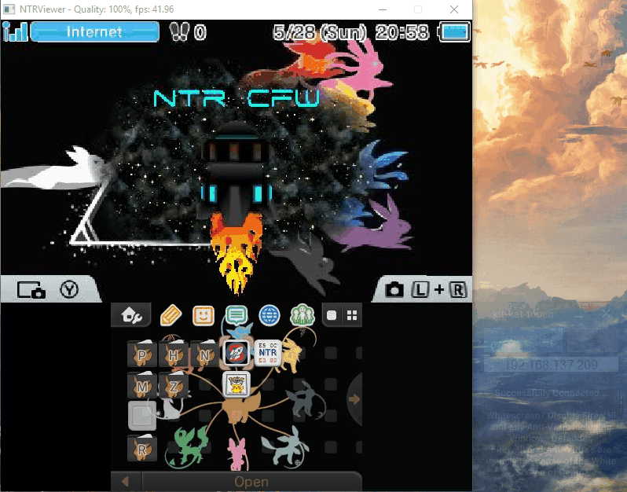

A fork of the Mega 3DS Toolkit Chain by: http://twitter.com/Pr4gma
- Featuring a Slick UI & the Ability to Control Your Touchscreen while Streaming with NTRViewer.exe
- Featuring a Slick UI & the Ability to Control Your Touchscreen while Streaming with NTRViewer.exe
(Optimized to be paired with some other programs)
 |
kit-kat vs kit-kat-touch User Interface:


60 Second Demo GIF here:

How to Setup
On your 3DS:
- Download/Install "InputProc" and "BootNTR Selector" from titleDB in FBI





- Tap Remote Installer in FBI -> Tap "Receive URLs over the Network" -> Copy your 3DS IP Address


- Open InputProc -> Open BootNTR Selector -> Wait until its back to the Home menu.
You must Open "InputProc" and "BootNTR Selector" everytime you restart your n3DS
On kit-kat-touch.exe
- Enter 3DS IP Address

- Open the Controller Tab -> Wait for InputRedirection Client to Load

- Press ESC -> Press f4 -> OK (to remove the numbers)

- On Connect Tab -> Click "Connect Button" -> Give it a few seconds to Open NtrViewer.exe

- Move kit-kat-touch by clicking the program title (kit-kat-touch above Connect) & Hover the Touchscreen over Ntrviewer's Touchscreen Stream

- Download "Vitrite.zip" from the Download tab in kit-kat-touch

- Extract & Load Vitrite.exe -> Press Cntrl+Shift+1 to change kit-kat-touch.exe Transparent (cntrl+shft+0 to return to normal)

Clicks now Register on NtrViewer.exe as Physical Touchscreen Input!
Setting Up Joy2Key for Gamepad Mouse Control
Joy2key can map near any gamepad to keyboard/mouse Inputs(useful when games only have keyboard controls, you can map buttons to those keys and have a working gamepad)